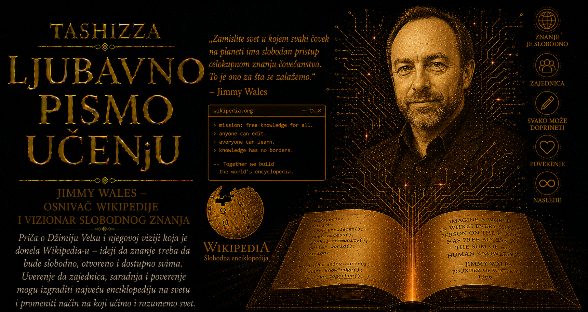

Ljubavno pismo učenju

Postoje ljudi koji veliku zamisao čuvaju tako što oko nje podignu zidove, odrede ko sme da joj priđe i poistovete je sa sopstvenim imenom. Jimmy Wales izabrao je otvoreniji i neizvesniji put. Svoju najvažniju ideju poverio je nepoznatim ljudima, dopuštajući im da je dopunjuju, ispravljaju, osporavaju i svakoga dana ponovo stvaraju. U tome je bilo nečega smelog, gotovo protivnog vekovima starom razumevanju autorstva. Enciklopedija je dugo predstavljala uređenu kuću znanja u kojoj stručnjaci govore, urednici presuđuju, a čitaoci slušaju. Wales je pomogao da nastane kuća sa hiljadama vrata, bez konačnog izdanja i poslednje reči, čija stabilnost počiva na sposobnosti zajednice da grešku uoči, raspravi i popravi.
Jimmy Donal Wales rođen je 8. avgusta 1966. godine u Hantsvilu, u američkoj saveznoj državi Alabama. Grad u kojem je odrastao snažno je oblikovala svemirska industrija i prisustvo američkog raketnog programa, pa su se u njegovom okruženju susretali južnjačka porodična tradicija, vojna disciplina, naučna ambicija i tehnološki optimizam. Njegov otac Jimmy radio je kao upravnik prodavnice, dok su majka Doris i baka Erma vodile malu privatnu školu. Porodica mu nije predala veliko nasledstvo u novcu ili društvenom položaju, ali mu je pružila nešto što će se pokazati dragocenijim: okruženje u kojem su radoznalost, samostalno čitanje i poverenje u sposobnost deteta da istražuje imali istaknuto mesto.
Škola njegove majke i bake bila je mala, sa svega nekoliko učenika različitog uzrasta. U njoj nije vladala stroga podela vremena koja prekida jedno pitanje čim se oglasi zvono, pa je Wales mogao dugo da ostane uz temu koja bi ga zaokupila. Posebno su ga privlačile enciklopedije. Čitao ih je sa pažnjom deteta koje ne traži samo odgovor na školski zadatak, nego prolaz prema sledećem pitanju. Od jednog članka stizao je do drugog, povezujući istoriju, geografiju, nauku i biografije u sopstvenu mrežu značenja. Mnogo godina kasnije takvo kretanje među pojmovima postaće svakodnevno iskustvo milijardi ljudi koji prate unutrašnje veze Wikipedije.
U tom ranom iskustvu mogu se prepoznati obrisi Walesovog kasnijeg shvatanja učenja. Dete pokazuje veću misaonu smelost kada mu odrasli ne oduzimaju svako pravo izbora, a radoznalost se produbljuje kada pitanje sme da odvede učenika izvan unapred propisane lekcije. Sloboda ipak traži prisustvo odgovornih ljudi, dostupne izvore i granice koje štite prostor od haosa. Ta ravnoteža između poverenja i nadzora, samostalnosti i odgovornosti, postaće jedno od najvažnijih načela zajednice koju će Wales mnogo kasnije okupiti.
Posle srednje škole studirao je finansije na Univerzitetu Auburn, a potom je nastavio postdiplomsko obrazovanje na Univerzitetu Alabama i Univerzitetu Indiana. Doktorsku disertaciju nije završio, ali je tokom studija produbio interesovanje za ekonomiju, teoriju tržišta i načine na koje složeni poredak može nastati iz mnoštva pojedinačnih odluka. Tržište se oblikuje kroz nepotpune informacije, procene, pogrešne korake i neprestane korekcije. Nijedan učesnik ne vidi celinu, a iz njihovih međusobnih reakcija ipak nastaje obrazac. Wales je razumeo da sličan oblik reda može nastati i u zajednici znanja, pod uslovom da postoje jasna pravila, vidljive posledice odluka i pouzdani mehanizmi povratne sprege.
Godinama je bio zaokupljen filozofijom Ayn Rand, naročito njenim naglašavanjem razuma, individualne odgovornosti i slobode od prinude. Učestvovao je u internet diskusijama o objektivizmu i privlačila ga je predstava čoveka koji misli sopstvenom glavom, ne tražeći dozvolu autoriteta da istražuje istinu. Njegov kasniji rad toj ideji je dodao važnu dimenziju. Snažan pojedinac u zajedničkom projektu pokazuje intelektualnu zrelost kada svoj zaključak izloži proveri, navede izvor, sasluša prigovor i prihvati dobru ispravku. Walesova životna putanja povezala je samostalnost mišljenja sa odgovornošću prema delu koje pripada mnogima.
Pre nego što je postao poznat kao pokretač internet enciklopedije, Wales je radio kao trgovac hartijama od vrednosti u Čikagu. Finansijska tržišta pružila su mu ekonomsku sigurnost i iskustvo donošenja odluka u složenom okruženju, ali ga nisu trajno zadržala. Sredinom devedesetih, u vreme naglog širenja komercijalnog interneta, sa partnerima je osnovao kompaniju Bomis. Ona je nudila pretraživanje i kataloge sadržaja namenjene pretežno muškoj publici, uključujući zabavne i erotske stranice. Taj deo njegove prošlosti teško se uklapa u uglađenu pripovest o vizionaru koji je od mladosti sledio samo jednu uzvišenu nameru, ali upravo zato njegov život prikazuje stvaran put čoveka koji je istraživao mogućnosti haotičnog ranog weba. Prihodi i infrastruktura Bomisa omogućili su mu da finansira enciklopedijski projekat bez sigurnog izgleda na zaradu.
Pokret slobodnog i otvorenog softvera snažno je uticao na njegovo razmišljanje. Razvoj programa pred očima zajednice pokazivao je da veliki broj ljudi može zajednički stvarati složeno i pouzdano delo kada su njegov izvorni materijal, postupci i greške dostupni proveri. Esej Erica Raymonda Katedrala i bazar približio mu je razliku između sistema građenog iza zatvorenih vrata i poduhvata koji raste kroz doprinos mnoštva učesnika. Wales je počeo da razmatra mogućnost da se sličan princip primeni na opšte znanje: ako programeri mogu dobrovoljno popravljati kod koji svi koriste, onda bi i nastavnici, istoričari, inženjeri, lekari, bibliotekari i radoznali čitaoci mogli zajednički razvijati enciklopediju.
Nupedia je predstavljala prvi ozbiljan pokušaj ostvarenja te zamisli. Wales je 2000. godine angažovao Larryja Sangera kao glavnog urednika, oslanjajući se na njegovo filozofsko obrazovanje, akademsko iskustvo i poznavanje internet diskusija. Njih dvojica delila su želju da enciklopedija bude besplatno dostupna, dok su projektu prilazila sa različitim vrstama iskustva. Sanger je naglašavao stručne standarde, uredničku odgovornost i recenziju, a Wales je donosio sredstva, preduzetničku spremnost na rizik i široku viziju slobodnog znanja. Strogi postupak Nupedije proizveo je mali broj članaka, ali je upravo njegova sporost otvorila put radikalno drugačijem modelu.
Kada je početkom 2001. predloženo uvođenje wikija, niko nije mogao pouzdano znati kakav će ishod doneti stranica koju gotovo svako može menjati. Wales je očekivao veliku količinu besmislica, a otvorenost je zaista privlačila neznanje, sujetu, propagandu, šalu i namerno oštećivanje sadržaja. Istovremeno su se pojavili ljudi koji su unosili činjenice, širili kratke beleške, popravljali formulacije, povezivali teme i vraćali tekst koji bi vandal obrisao. Sporedni eksperiment počeo je da raste mnogo brže od strogo uređene Nupedije. Wales je tada pokazao jednu od najvažnijih osobina dobrog stvaraoca: umeo je da posmatra stvarno ponašanje sistema i promeni plan kada se pokazalo da zajednica otkriva bolji put.
Oko pojedinačnih uloga u osnivanju Wikipedije kasnije su nastali sporovi, naročito oko pitanja Larryja Sangera kao suosnivača. Istorijska građa svedoči o zajedničkom poduhvatu u kojem su doprinosi bili različiti i međusobno povezani. Wales je obezbedio viziju, novac, infrastrukturu i odluku da se projekat pokrene, dok je Sanger predložio upotrebu wikija u okviru Nupedije, oblikovao ime Wikipedia, organizovao prve saradnike i učestvovao u stvaranju ranih uredničkih pravila. Napetost oko osnivačkog nasleđa pokazuje koliko i tvorci otvorenog znanja ostaju osetljivi prema načinu na koji će istorija ispričati njihove uloge. Ujedno nosi prikladnu ironiju: biografija čoveka povezanog sa enciklopedijom javnih ispravki i sama je postala predmet rasprave o formulacijama, izvorima i značenju reči „osnivač”.
Walesov poseban dar ogledao se u sposobnosti da velikoj i rasutoj grupi ljudi ponudi zajedničku svrhu. Govorio je smireno, izbegavao retoriku neprekidnog sukoba i naglašavao ljubaznost, razumnost, neutralnost i pretpostavljanje dobre namere. Verovao je da većina ljudi želi da pomogne kada uđe u prostor sa jasnim i plemenitim ciljem. Takvo poverenje nije bilo slepo, jer je prihvatao potrebu za administratorima, zaštitom stranica, blokiranjem naloga i postupcima rešavanja sporova. Njegova zamisao poverenja sadržala je mogućnost provere: saradniku se pruža prilika da doprinese, dok svaka izmena ostaje vidljiva i podložna proceni zajednice.
U Walesovom položaju dugo je postojala zanimljiva napetost. Zalagao se za decentralizovanu zajednicu, a istovremeno je u njenim ranim godinama uživao gotovo očinski autoritet. Urednici su ga zvali Jimbo, obraćali mu se tokom sporova i ponekad očekivali da njegova reč razreši dilemu. Njegove intervencije mogle su biti doživljene kao presude, što se nije uvek lako uklapalo u sistem zasnovan na pravilima, raspravi i raspodeljenoj moći. Morao je da uči kako osnivač postaje jedan učesnik u delu koje je preraslo njegovo vlasništvo i kako lični autoritet treba povući pred ustanovom sposobnom da traje bez neprekidnog odobrenja svog pokretača.
Osnivanjem Wikimedia Foundation 2003. godine Wales je ključnu infrastrukturu poverio neprofitnoj organizaciji. U vremenu kada su brojne internet kompanije nastojale da prikupe što više podataka, prodaju pažnju korisnika i podignu komercijalne zidove, Wikipedia je sačuvala slobodan pristup, otvorene licence i odsustvo oglašavanja. Takva odluka zahtevala je ambiciju drukčiju od želje za najvećom mogućom ličnom dobiti. Wales je uživao u javnom priznanju i brižljivo čuvao svoje mesto u istoriji, ali je istovremeno dopustio da njegovo najuticajnije delo pripadne ustanovi, zajednici i čitaocima koji će ga dalje razvijati.
Wikipedia je rasla zahvaljujući ljudima čija imena većina sveta nikada neće upoznati. Među njenim urednicima nalazili su se profesori, srednjoškolci, bibliotekari, programeri, penzioneri, istraživači i samouki poznavaoci veoma uskih oblasti. Ispravljali su datume, unosili bibliografske podatke, prevodili članke, opisivali fotografije, proveravali tvrdnje i vodili duge rasprave o jednoj jedinoj rečenici. Wales je često isticao da srce projekta čini jezgro izuzetno posvećenih dobrovoljaca, okruženo mnogo većim krugom povremenih saradnika. Njegovo stvaralačko delo sastojalo se u obezbeđivanju uslova u kojima drugi ljudi dobijaju razlog, alat i slobodu da stvaraju.
Viziju tog poduhvata izrazio je slikom sveta u kojem svaki čovek može slobodno učestvovati u ukupnom znanju čovečanstva. Snaga te zamisli počiva na reči „svaki”: dete u malom mestu, student bez novca za skupe priručnike, nastavnik koji priprema čas, lekar u udaljenoj zajednici, putnik koji želi da razume istoriju grada ili čovek koji je usred noći naišao na nepoznat pojam dobijaju pristup početnoj mapi znanja. Slobodno znanje u takvom razumevanju postaje osnova samostalnog odlučivanja, obrazovne pravičnosti i ljudskog dostojanstva.
Wales je dobrovoljačkoj saradnji pripisivao veliku snagu, ali je iskustvo pokazivalo i njene granice. Zajednice mogu postati zatvorene, urednička pravila suviše složena, rasprave neprijateljske, a iskusni učesnici nestrpljivi prema početnicima. Grupe sa više slobodnog vremena, boljim pristupom internetu i većom tehničkom sigurnošću stiču nesrazmeran uticaj, dok čitave kulture i društvene grupe ostaju slabije predstavljene. Otvoren prostor postaje istinski gostoljubiv tek kada postoje ljudi spremni da dočekaju novog saradnika, objasne pravila, zaustave nasilje i sačuvaju mesto za razložan argument. Wikipedia traje zahvaljujući hiljadama ljudi koji prihvataju taj nevidljivi i često nezahvalni posao.
Posle Wikipedije Wales je učestvovao u pokretanju drugih projekata, među kojima su bili Wikia, kasnije poznata kao Fandom, kao i poduhvati povezani sa saradničkim novinarstvom i društvenim mrežama. Nijedan od njih nije dostigao istorijski značaj Wikipedije, ali su svi proisticali iz njegove trajne zaokupljenosti pitanjem može li se kultura saradnje preneti na druge delove interneta. Posebno ga je zabrinjavalo okruženje u kojem algoritmi nagrađuju bes, senzaciju i sukob zato što takva osećanja duže zadržavaju pažnju korisnika. Wikipedia je u poređenju sa tim platformama sačuvala nešto od ranog internet ideala: svrha joj je da čoveku približi znanje, a ne da ga neprekidno uznemirava kako bi mu prikazala sledeći oglas.
Tokom godina Wales je ostao simbol Wikipedije, doživotni član Upravnog odbora Wikimedia Foundation i redovan učesnik okupljanja zajednice. Ustanovio je priznanje „Wikimedijanac godine” kako bi javnu pažnju usmerio prema dobrovoljcima čiji rad izražava najbolje osobine pokreta. U tom gestu sadržan je paradoks njegove uloge: javnost traži jedno prepoznatljivo lice, dok enciklopediju svakodnevno stvaraju ljudi bez javnog lica. Wales prihvata istorijsko mesto pokretača, ali njegovo nasleđe dobija pun smisao tek kada pažnju vrati zajednici koja je početnu zamisao pretvorila u globalno delo.
Sa širenjem dezinformacija, političke polarizacije i generativne veštačke inteligencije, pitanja koja su oblikovala njegov rad postala su još značajnija. Kako zajednica utvrđuje pouzdanost tvrdnje, na koji način razlikuje činjenicu od tumačenja i propagande, ko može govoriti u ime neutralnosti i kako se čuva trag do prvobitnog izvora? Wikipedia ne poseduje konačne odgovore, ali neguje kulturu javnog neslaganja u kojoj tvrdnja mora biti obrazložena i može biti osporena. Njene rasprave umeju da budu zamorne, sitničave i neprijatne, a ipak čuvaju dragoceno saznanje da znanje zahteva postupak, strpljenje i mogućnost revizije.
U poređenju sa mnogim tehnološkim preduzetnicima svoje generacije, Wales se izdvojio odlukom da najuticajniji poduhvat u kojem je učestvovao ne pretvori u mašinu za izvlačenje najveće moguće dobiti. Ključna infrastruktura predata je neprofitnoj organizaciji, sadržaj je ostao pod slobodnim licencama, a čitaoci su sačuvali pristup bez pretplate. Ta odluka nije otklonila sve finansijske, upravljačke i društvene napetosti, ali je zaštitila osnovni moralni oblik projekta. Wikipedia pripada ljudima koji je čitaju, koriste, prenose, proveravaju i popravljaju.
Najlepši deo Walesove priče možda se nalazi u činjenici da njegovo glavno delo nikada neće dobiti završno izdanje. Klasična knjiga u jednom trenutku napušta autora i poprima konačan oblik, dok Wikipedia svakoga časa menja rečenice, dobija članke, prevode, izvore i nove veze među pojmovima. Njena nedovršenost priznaje da se ljudsko znanje širi, da svaka tvrdnja nosi istoriju i da svaka generacija mora ponovo proveravati ono što je nasledila. Enciklopedija je tako od predmeta na polici postala odnos među ljudima.
Walesov život pokazuje da tehnologija može promeniti način na koji zamišljamo autoritet, vlasništvo i saradnju. On nije izmislio ljudsku radoznalost, enciklopediju, hipertekst ili wiki, ali je prepoznao trenutak u kojem su se te sile mogle povezati i imao dovoljno hrabrosti da znanje poveri mnoštvu nepoznatih ljudi. Njegova vera u zajednicu počivala je na uverenju da ljudi mogu postajati mudriji kada rade pred očima drugih, kada moraju da navedu razlog, pokažu izvor i ostave mogućnost da ih neko ispravi.
U svetu u kojem se informacije često proizvode da bi izazvale strah, privukle pažnju ili učvrstile postojeće podele, Wikipedia čuva drukčiji ideal. Ona poziva čoveka da zastane, proveri, dopuni i razgovara. Iza tog poziva još se može naslutiti dečak iz male škole u Alabami, zadubljen u tomove enciklopedije i slobodan da prati sopstveno pitanje. Mnogo godina kasnije, pomogao je da sličnu mogućnost dobiju milijarde ljudi. Njegovo najveće nasleđe obuhvata hrabru pretpostavku da znanje može postati zajednički dom i da čovečanstvo, uprkos sujeti, sukobima i greškama, može zajedno učiti kako da ga gradi.